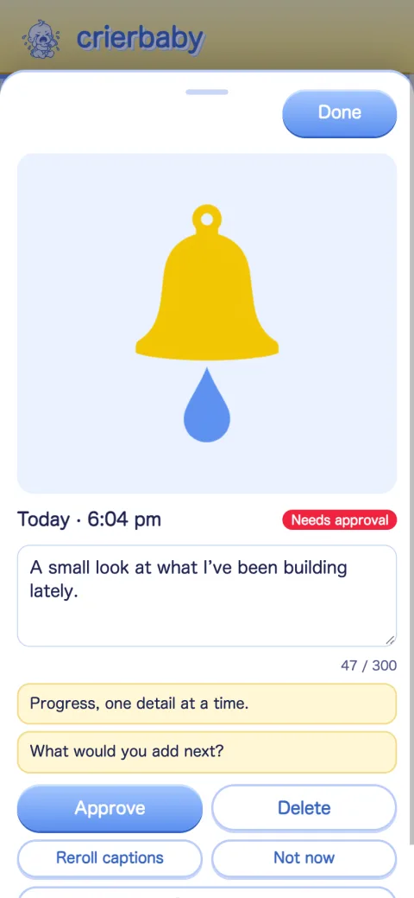
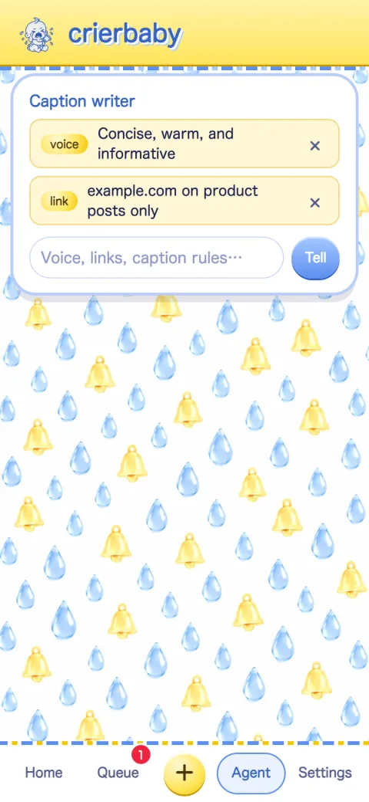

Projects
Things I built because I needed them and they didn’t exist yet. I ship them as Unlikely Archivist.
Obsidian tool · Templater
Flatpack
Export one note or your whole Obsidian vault as a single document, with every embedded note included once.
The problem
Easy Bake, the usual plugin for this, pastes an embedded note in full every time it appears. In a vault where notes embed each other, the same text repeats until the master document is too big to use.
The fix
Flatpack includes each embed the first time it shows up, then leaves a one-line pointer back to it. Your folders become headings, so the result still reads like your vault.
104,000 → 9,700lines in my own vault: Easy Bake vs. Flatpack.
Explore Flatpack on GitHub →Autonomous publication · Val Town · TypeScript
RIP · URL
A weekly obituary newsletter for dead domain names and the stories of their downfalls. It runs itself, so it has to fact-check itself.
The risk
An unsupervised AI writer will happily eulogize a company that’s still alive. My pilot did it three times: oracle.com, cranberries.com, and saban.com. For a publication about real companies, “usually right” isn’t good enough.
The system
A TypeScript state machine finds a candidate, checks live that its URL is really dead, and gathers primary sources and an archived screenshot. Claude Opus writes from that evidence only, and a separate fact-check audits every draft before it publishes. Tests run on every push to guard the one rule that matters most: a living website never gets an obituary.
Photo scheduler · Cloudflare Workers · Vision AI
crierbaby
Dump your photos in, tell it how you talk, and approve a batch every few weeks. It writes the captions and alt text and posts on schedule.



The problem
Posting a photo every day is a chore. Handing the account to an AI means off-voice, repetitive, or plain wrong posts going out with nobody checking.
The system
A vision model writes captions and alt text from the photo itself, following voice notes you write in plain words. Look-alike photos get spaced apart, and new captions are checked against old ones for repetition. Nothing posts until you approve it. Tests cover the parts that fail quietly: a retry that never double-posts, a schedule that survives daylight saving, look-alike photos, repeated phrases, and PIN rate limits.
Creative coding · Browser tools
Creative Browser Tools
Browser tools for design that I wished existed: one pulls colors out of a photo, the other rots an image on purpose.